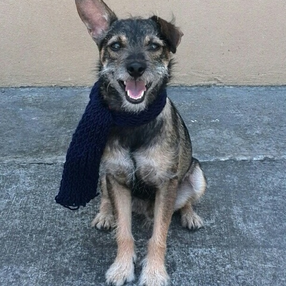

¿Cuántos perros adoptados durante la pandemia fueron regresados a los albergues?
La Asociación Estadounidense para la Prevención de la Crueldad Animal informó que desde el inicio de la pandemia en 2020, uno de cada cinco hogares adoptó un animal de compañía. La organización dio a conocer que el 90% de perros adoptados en ese periodo permanece en los hogares que los acogieron y no regresaron a los albergues.
Por Gabriela Frías, CNN Publicado a las 18:23 ET (22:23 GMT) 26 agosto, 2022
"Perroomies", un acto de amor para adoptar a cientos de perros de la calle durante la pandemia
"En el tiempo de la cuarentena yo estaba sola con mi esposo y decidimos adoptar un perro para que nos motivara y tuviéramos compañía", asegura Violeta Márquez, quien es una de las cientos de personas que ayudaron al albergue "San Cristobal" a darle un nuevo hogar a perros abandonados. Cristobal Suárez, fundador del albergue para perros, dijo a CNN que debido a la pandemia por coronavirus recurrió a una campaña adopciones temporales para evitar que los animales pasaran hambre debido a la falta de donaciones. La campaña funcionó y más de una centena de perros fueron adoptados. MIRA: Estos policías toman medidas por el aumento de perros callejeros en Colombia por la cuarentena
Por Belén Zapata, CNN Publicado a las 10:12 ET (14:12 GMT) 18 septiembre, 2020